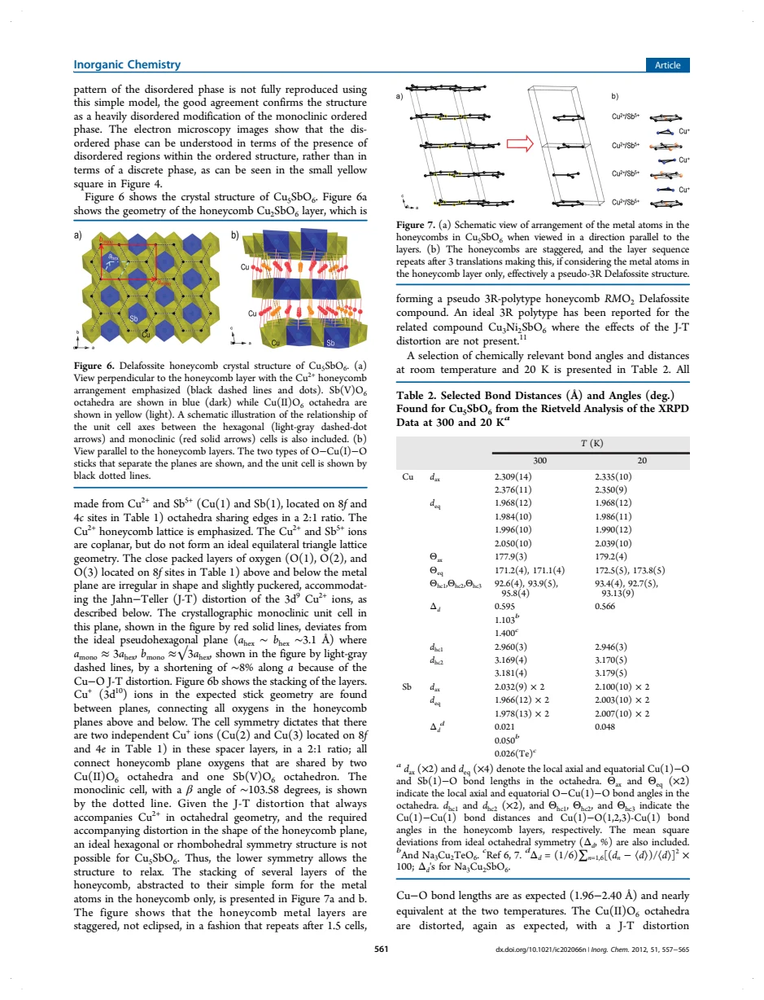
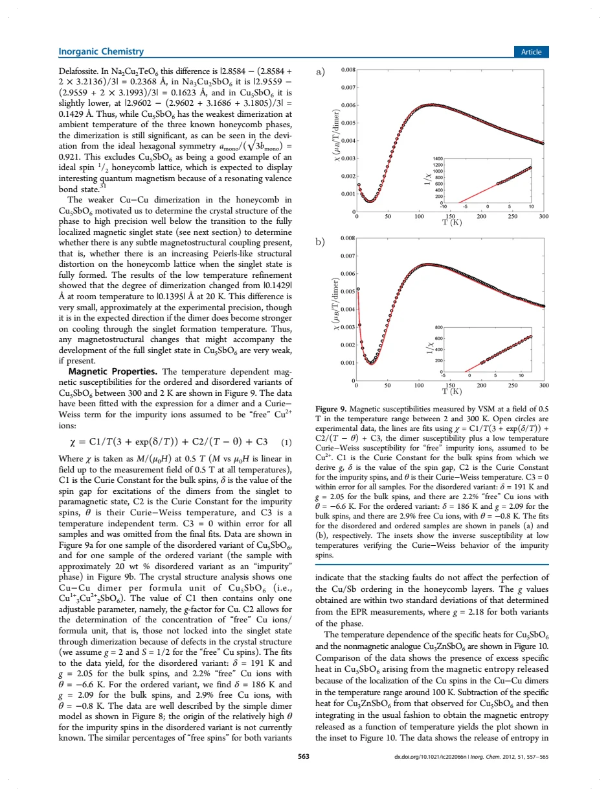
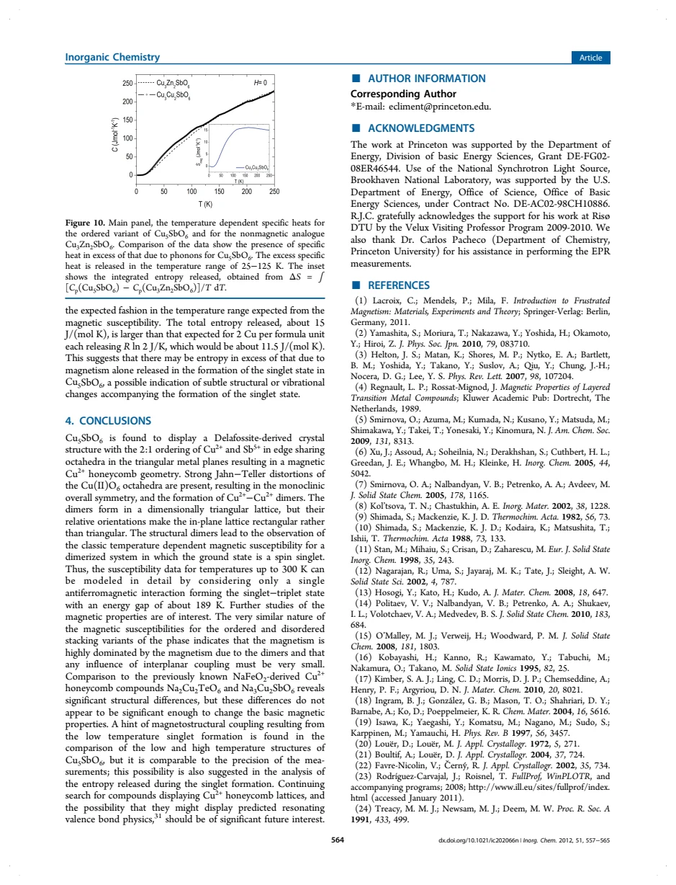

experiment · Climent-Pascual · supplied source 2011
Spin 1/2 Delafossite Honeycomb Compound Cu5SbO6
Cu5SbO6 contains distorted Cu2+ honeycomb layers, but its susceptibility is dominated by singlet formation rather than ideal honeycomb magnetism.
The question: What are the crystal structure and magnetic ground-state signatures of Cu5SbO6?
Before you start: the few terms you need
- Cu+: closed-shell 3d10 ion
- Cu2+: 3d9 ion with spin one-half
- Singlet: two-spin state with total spin zero
- Jahn-Teller distortion: orbital degeneracy drives unequal local bond lengths
See → explain → test
Understand it in four pictures.
Picture 1 / 4
Count the magnetic ions
Look for: The formula contains five copper ions, but only two Cu2+ spins per formula unit.
Swipe across the picture to read every label, or enlarge it below.
- 3 Cu+ spacer ions
- 2 Cu2+ layer ions
- 1 Sb5+ layer ion
Teaching ion inventory, not a crystallographic refinement.
Cu(I)3Cu(II)2Sb(V)O6 separates nonmagnetic spacer ions from magnetic honeycomb ions.
Picture 2 / 4
A honeycomb can be distorted
Look for: Cu2+ positions form a honeycomb arrangement, with Jahn-Teller distortions and inequivalent Cu-Cu separations.
Swipe across the picture to read every label, or enlarge it below.
- Cu2+ honeycomb positions
- Unequal local bonds
- Monoclinic C2/c
Teaching honeycomb topology; actual orbital geometry and exchange strengths require the source structure.
A structural honeycomb does not automatically realize uniform nearest-neighbor spin exchange.
Picture 3 / 4
Separate dimers from defect spins
Look for: The broad susceptibility maximum falls on cooling; a small low-temperature upturn belongs to nearly free defect spins.
Swipe across the picture to read every label, or enlarge it below.
- Bulk dimers
- Defect spins
Teaching separation of terms; no experimental points or fitted curves are reproduced.
The fitted singlet-triplet gap is about 189 K, while the Curie-Weiss tail is a separate contribution.
Check the original: PDF p. 7
Picture 4 / 4
Check structure against entropy
Look for: Compare refined structures at 300 and 20 K and subtract the nonmagnetic analogue's heat capacity.
Swipe across the picture to read every label, or enlarge it below.
- Tiny distance change
- Entropy exceeds 2R ln 2
- Possible weak lattice coupling
Observation, comparison and tentative interpretation; phonon subtraction matters.
The structural change is near measurement precision; excess entropy suggests, but does not prove, additional lattice participation.
Predict before revealing
A small Curie-like low-temperature tail sits beneath an otherwise gapped susceptibility. What follows?
Choose an answer, then compare the reasoning.
The fit separates a thermally suppressed bulk-dimer contribution from a small defect Curie-Weiss term.
Read the answer
A small defect population may remain paramagnetic while most spins form singlets The fit separates a thermally suppressed bulk-dimer contribution from a small defect Curie-Weiss term.
Go deeper Follow the full argument
Start with chemistry, then the spin lattice
The work identifies Cu5SbO6 as a delafossite-derived compound with monoclinic symmetry. Charge neutrality gives three Cu+ ions, two Cu2+ ions and one Sb5+ ion per formula unit. Cu+ has a filled 3d shell and forms approximately linear O-Cu-O spacer units. Cu2+ sits in distorted octahedral oxygen environments in layers containing Cu and Sb in a 2:1 ratio. That ordering produces a honeycomb arrangement of magnetic Cu2+ positions. The important qualification is that the honeycomb is not geometrically ideal: Jahn-Teller elongations select local orbital directions and distort the oxygen network. Identifying the shape of the atomic lattice is the first stage of a magnetic argument, not a measurement of the entire exchange Hamiltonian. The later 2025 Cu5SbO6 study in this collection supplies a sharper test of that distinction.
How the authors establish stacking disorder
Different synthesis conditions produce more ordered or more disordered layer stacking. Laboratory diffraction shows selective broadening: some peaks broaden strongly while others stay sharp. That pattern is more informative than saying the sample has generally small crystallites. Selected-area electron diffraction shows streaks along the stacking direction in the disordered material. The structural analysis uses an ordered-phase Rietveld refinement, explicitly accommodating disordered material and a small CuO contribution, then compares stacking simulations with the measured patterns. The simplified DIFFaX model uses alternative layer translations to account for broad and asymmetric features. Its imperfect match is acknowledged. Thus the evidence supports irregular stacking of related layers; it does not require treating every faulted region as a chemically different compound. High-resolution microscopy provides an additional real-space check.
Read susceptibility as a sum of mechanisms
The susceptibility between approximately 2 and 300 K has a broad maximum and decreases as the singlet state becomes populated on cooling. An isolated-dimer expression fits that bulk response, while a Curie-Weiss term accounts for a small low-temperature upturn. The fitted gap is 191 K in the disordered variant and 186 K in the ordered variant, summarized as about 189 K. The free-spin estimates are about 2.2% and 2.9%, respectively. These are model-derived quantities, not direct counts of broken dimers in an image. Similar bulk curves for the two stacking variants suggest that the dominant magnetic energy scale survives changes in stacking. The 2011 interpretation assigns singlets to short structural Cu-Cu pairs; that assignment should be read historically because later neutron spectroscopy reexamines the exchange paths.
What the low-temperature refinement can actually resolve
The motivation for comparing 300 and 20 K structures is to ask whether singlet formation strengthens a Peierls-like distortion. The symmetry stays monoclinic, and relevant distances change very little. The paper's structural dimerization measure changes from about 0.1429 to 0.1395 angstrom, a difference comparable with the experimental precision. One must not turn this into evidence for a large structural transition at the spin-gap scale. Nor does the small difference establish that the lattice is perfectly inactive: weak coupling could fall beneath the sensitivity of the refinement. The authors also compare related Na-based honeycomb compounds and note different orientations of orbital planes in adjacent layers. These structural comparisons motivate possible differences in interlayer coupling without determining those magnetic interactions quantitatively.
Entropy supplies a second test with a subtraction caveat
The magnetic heat-capacity estimate subtracts a nonmagnetic structural analogue, Cu3Zn2SbO6, from Cu5SbO6 and integrates the difference divided by temperature. Two independent spin-one-half ions would contribute 2R ln 2, about 11.5 J per mole kelvin. The reported integral reaches roughly 15 J per mole kelvin. The authors therefore suggest possible structural or vibrational entropy accompanying singlet formation. This inference depends on whether the analogue reproduces the phonon background accurately; an excess after subtraction is not automatically pure spin entropy. Taken together, susceptibility strongly supports a gapped singlet response, while the structural and calorimetric observations only suggest very weak lattice participation. The PDF was published online in December 2011 but belongs to the 2012 Inorganic Chemistry volume; the supplied filename retains its original 2011 label.
Translate the mathematics Key equations and symbol meanings
χ(T) = C1/[T(3 + exp(δ/T))] + C2/(T − θ) + C3
Symbols: T: temperature in K; δ: fitted gap in K; C1: bulk-dimer amplitude; C2: defect Curie amplitude; θ: defect Weiss temperature; C3: constant background.
The exponential suppresses the bulk dimer response at low T. A rising defect tail can coexist with a gapped bulk. C3 was consistent with zero in the final fits.
ΔS(T) = ∫0^T [Cp(Cu5SbO6) − Cp(Cu3Zn2SbO6)]/T′ dT′
Symbols: Cp: molar heat capacity; T′: integration temperature; ΔS: excess entropy relative to the nonmagnetic analogue.
Divide heat capacity by temperature before integration. The difference contains any mismatch in phonons as well as magnetic entropy.
Read the evidence A guided look at the original figures

Open the full original page ↗

Open the full original page ↗

Open the full original page ↗
What this paper does—and does not—establish
- Published online in 2011; journal issue is Inorg. Chem. 2012, 51, 557–565. Original filename remains unchanged.
- The isolated-dimer interpretation does not determine every exchange path. Read alongside source 43's later neutron test.
- Weak magnetostructural coupling is tentative, and the heat-capacity subtraction is not uniquely magnetic.
Explain it back.
Try answering aloud before opening the explanation.
How many local Cu2+ spins occur per formula unit?
Two; the other three copper ions are Cu+ with closed shells.
Does the 300-to-20 K comparison show strong structural dimerization on cooling?
No. The changes are very small and near refinement precision.
Why is the calorimetric excess not an exact spin-entropy measurement?
It depends on subtracting the nonmagnetic analogue's lattice heat capacity; residual phonon differences can contribute.
Connect the next paper.
Source version, reading coverage and preservation
Complete extracted body text and selected rendered pages 5,7,8; reference-page structure checked.
Reviewed body pages: 1, 2, 3, 4, 5, 6, 7, 8. Referenced works not independently re-read.
Original file retained byte for byte. SHA-256: 7518af3b71f4c7cec2fe0e2a63f9613001d7bb398a5a8898165e1805a73212b6
Filename: InorgChem - Climent-Pasc. - Spin one-half delafossite honeycomb Cu5SbO6 - 2011.pdf.